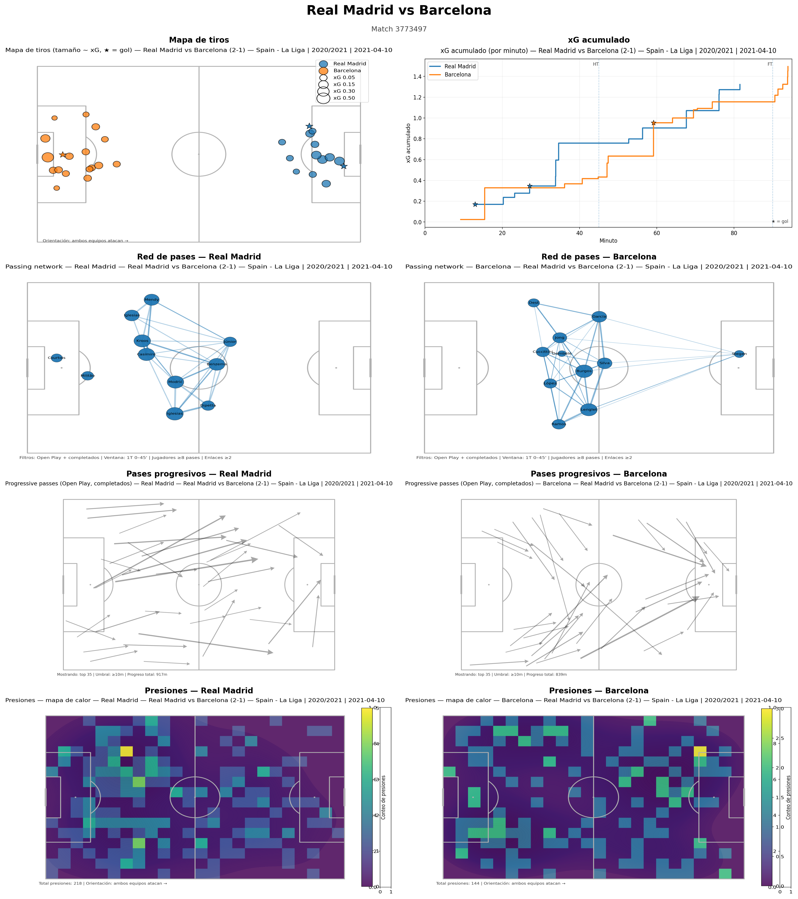

Análisis de partido — Match Report profesional (StatsBomb)
Descripción del proyecto:
Desarrollo de un match report profesional completamente automatizado a partir de datos
de StatsBomb Open Data, generado mediante un Jupyter Notebook.
El flujo integra extracción de datos vía API, limpieza, transformación,
visualización avanzada y presentación final en formato dashboard.
¿Qué hace este proyecto?
– Descarga automática de eventos, alineaciones y acciones del partido.
– Generación de múltiples visualizaciones tácticas y analíticas.
– Composición final en un dashboard tipo reporte profesional.
– Exportación automática del informe en PNG y PDF, listo para compartir.
Visualizaciones incluidas:
– Mapa de tiros (xG y goles).
– xG acumulado por minuto.
– Redes de pases (local vs visitante).
– Pases progresivos comparados.
– Mapas de calor de presiones.
Principales conclusiones que permite obtener:
- Comparar la calidad de las oportunidades generadas por cada equipo.
- Identificar estructuras de posesión y roles clave.
- Detectar patrones de progresión del juego.
- Analizar la intensidad defensiva y zonas de presión.
Valor analítico:
Reporte comparable a los utilizados por
departamentos de análisis profesional,
transformando datos crudos en insights tácticos claros
para la toma de decisiones deportivas.
